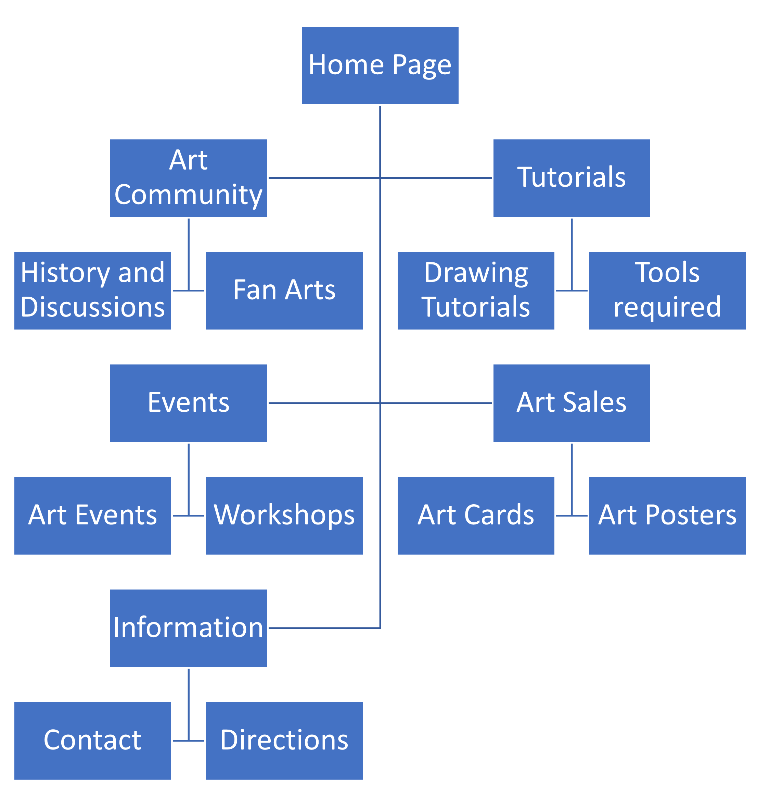

Bright Gyasi | N241 | 11/6/2023
The purpose of this drawing website is to position itself as a leading platform catering to art enthusiasts and drawing hobbyists. The goal is to differentiate from existing platforms by providing a visually appealing interface coupled with comprehensive information tailored to meet the diverse needs of artists. Emphasizing professionalism and quality content, the website aims to increase traffic, recognizing the website's credibility as the deciding factor in engaging the audience within this competitive field.
| Feature | URL |
|---|---|
| External Stylesheet | External Stylesheet |
| Embedded Stylesheet | Embedded Stylesheet |
| CSS Style Comment | CSS Style Comment |
| Style Override Example | Style Override Example |
| Header Comment | Header Comment |
| Table Example | Table Example |
| Blockquote Example | Blockquote Example |
| Ordered List Example | Ordered List Example |
| Unordered List Example | Unordered List Example |
| Definition List Example | Definition List Example |
| Image Example | Image Example |
| JPG Image Example | JPG Image Example |
| Form Example | Form Example |
| Typography Example | Typography Example |
| Rollover Effect Example | Rollover Effect Example |
| Other Feature Example | Other Feature Example: Before and After Effects |
The primary audience comprises art enthusiasts, amateur artists, and individuals exploring various drawing styles and techniques. They seek a platform offering information, guidance, and inspiration in the realm of drawing to improve skills, find inspiration, and connect with a passionate art community.
The secondary audience includes beginners and novices aiming to explore drawing as a hobby. They seek an interactive platform introducing them to the basics of drawing, discovering the possibilities of art as a hobby.
Existing drawing websites lack a comprehensive understanding of leveraging the internet as a robust marketing tool. They often exhibit subpar design, functionality, and content curation, indicating a gap in catering to the diverse needs of art enthusiasts. This creates an opportunity for a drawing website to stand out by providing a well-designed, user-friendly, and content-rich platform.
The website structure will cater to different levels of artistic expertise, offering a range of resources, tutorials, and a vibrant community space. It will feature sections on various drawing techniques, skill levels, art resources, and a dynamic section for community engagement and shared creativity.
| Parameter | Test Result | Description |
|---|---|---|
| Validation | Pass |
The HTML and CSS code used to create this website has been validated using the W3C Markup Validation Service and the W3C CSS Validation Service, respectively. This means that the code conforms to the relevant web standards and is less likely to cause issues with web browsers or other web technologies. The validation process can also help to identify any errors or inconsistencies in the code, which can be fixed to improve the overall quality of the website. |
| Flexibility | Pass |
The HTML code used to create this website demonstrates flexibility, allowing for easy customization and adaptation to different requirements. The website uses a responsive design, which means that it can adapt to different screen sizes and devices. This can help to ensure that the website is accessible and usable for a wide range of users. Additionally, the website uses CSS to style the content, which can be easily modified to change the look and feel of the website. This can be helpful for customizing the website to meet specific requirements or branding guidelines. |
| Speed | Pass |
The HTML code used to create this website is optimized for speed, with several strategies employed to enhance rendering and page loading times. The website uses a minimalist design, with few graphics or animations that could slow down the page loading time. Additionally, the website uses CSS to style the content, which can help to reduce the number of HTTP requests required to load the page. |
| Accessibility | Pass |
There are some measures in place to ensure accessibility for individuals with disabilities according to web accessibility standards. The website has a clear and concise layout, with headings and subheadings used to structure the content. The text is also presented in a legible font and size, making it easy to read. Additionally, the website includes alt text for images, which is important for individuals using screen readers. |
| Browser Independence | Pass |
The HTML code used to create this website appears to achieve browser independence, ensuring consistent functionality across various web browsers. The website is built using HTML5, which is supported by all major web browsers. Additionally, the website uses CSS3 for styling, which is also widely supported. The website does not rely on any proprietary technologies or plugins, which can help to ensure compatibility with different web browsers. |
"ArtStation." ArtStation, artstation.com/home. Accessed 11 November 2023.
"Saatchi Art." Saatchi Art, saatchiart.com/. Accessed 11 November 2023.
"A Complete Guide to Flexbox." MDN Web Docs, web.dev/flexbox/. Accessed 11 November 2023.
"Understanding Grid System." MDN Web Docs, web.dev/css/grid-template-areas/. Accessed 11 November 2023. "Creating Rounded Corners in CSS." W3Schools,
"Scrapbook Aesthetics." Canva Design School, designschool.canva.com/learn/design-trends/scrapbook-aesthetic/. Accessed 11 November 2023.
"Neo-brutalism." Canva Design School, designschool.canva.com/learn/design-trends/neo-brutalism/. Accessed 11 November 2023.
"W3C Markup Validation Service." W3C, validator.w3.org/. Accessed 11 November 2023.
"W3C CSS Validation Service." W3C, jigsaw.w3.org/css-validator/. Accessed 11 November 2023. Bright Gyasi.